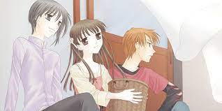

Best mangas so far ( for me)
- Oyasumi PunPun
- Aku no Hana
- Fruits Basket
- Chi no Wadachi
A coming-of-age drama story, it follows the life of a child named Onodera Punpun, from his elementary school years to his early 20s, as he copes with his dysfunctional family, love life, friends, life goals and hyperactive mind, while occasionally focusing on the lives and struggles of his schoolmates and family.
Aku no Hana follows the story of a Japanese high school boy named Kasuga who is (quite typically) in love with his classmate Saeki. During a moment of weakness, he steals her sports uniform.

Fruits Basket tells the story of Tohru Honda, an orphan girl who, after meeting Yuki, Kyo, and Shigure Sohma, learns that thirteen members of the Sohma family are possessed by the animals of the Chinese zodiac and are cursed to turn into their animal forms when they are weak, stressed, or when they are embraced by ...
An innocent thirteen-year-old boy who is growing up in the shadow of her insane mother. At the beginning being called a son of overprotective mother bothered him, he tried dragging himself away from his mother on realising her insanity. Psychologically tormented by the act of Seiko - pushing his cousin through a hill.